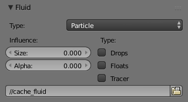

Fluid Particle¶
Reference
| Panel: | |
|---|---|
| Type: | Particle |

Fluid particle settings.
This type can be used to display particles created during the simulation. For now only tracers swimming along with the fluid are supported.
Note that the object can have any shape, position or type. Once the particle button is pressed, a particle system with the fluid simulation particles will be created for it at the correct position. When moving the original object, it might be necessary to delete the particle system, disable the fluidsim particles, and enable them again. The fluidsim particles are currently also unaffected by any other particle forces or settings.
Options¶
- Influence
- Size Influence
- The particles can have different sizes, if this value is 0 all are forced to be the same size.
- Alpha Influence
- If this value is greater zero, the alpha values of the particles are changed according to their size.
- Particle type
- Drops
- Surface splashes of the fluid result in droplets being strewn about, like fresh water, with low Surface Tension.
- Floats
- The surface tension of the fluid is higher and the fluid heavier, like cold seawater and soup. Breakaways are clumpier and fall back to the surface faster than Drops, as with high Surface Tension.
- Tracer
- Droplets follow the surface of the water where it existed, like a fog suspended above previous fluid levels. Use this to see where the fluid level has been.
- Path (bake directory)
- The simulation run from which to load the particles. This should usually have the same value as the fluid domain object (e.g. copy by Ctrl-C, Ctrl-V).